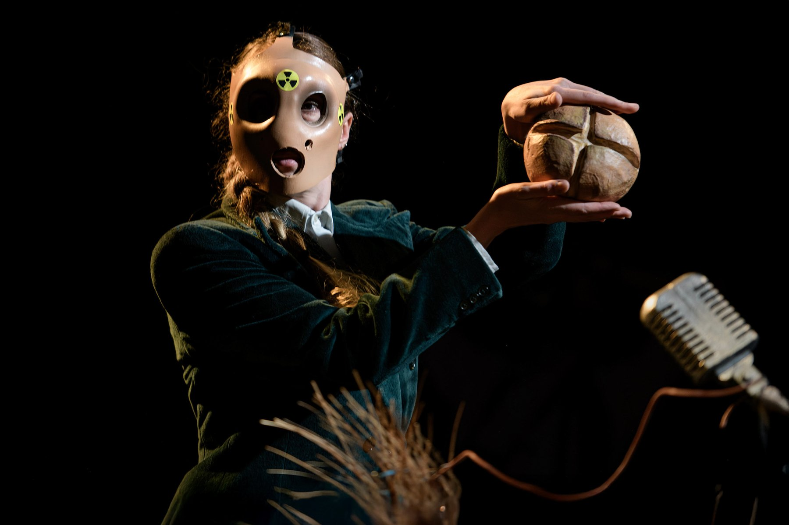
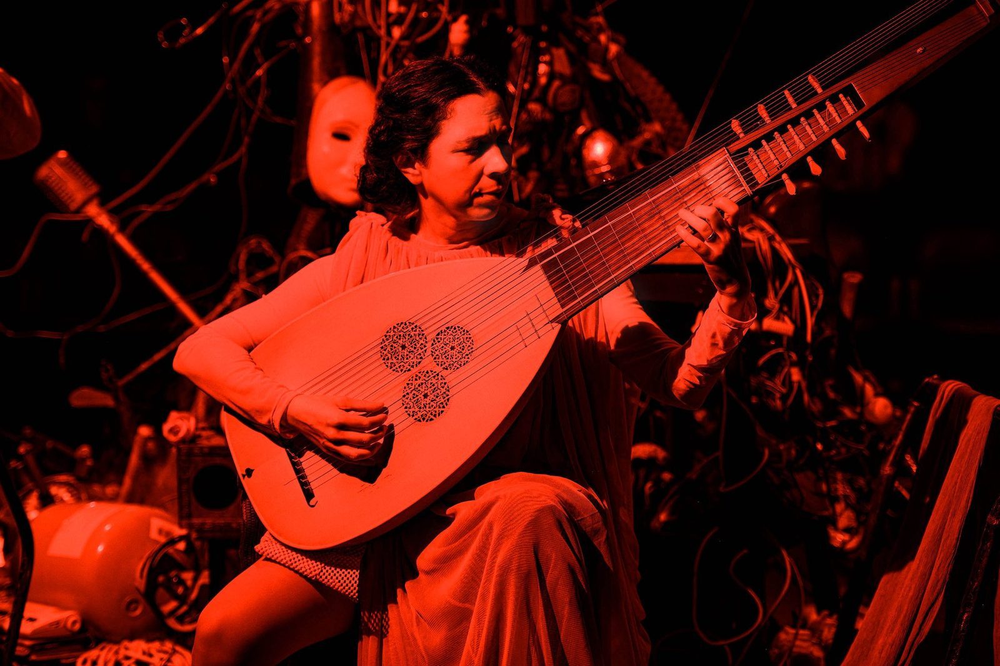
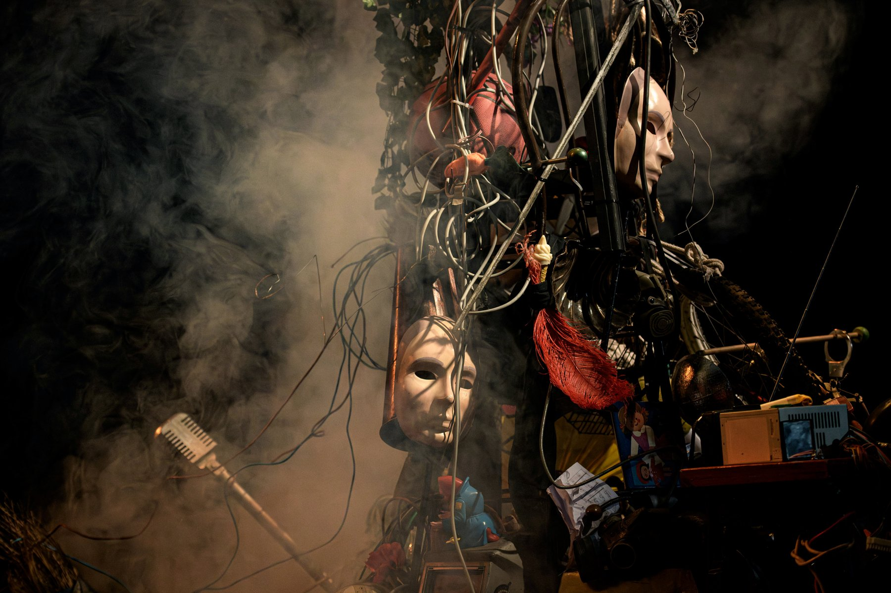

- — Emma Terno · Valentín Pelisch
- — Manuel Atwell · Emma Terno
- Carolina Cervetto
- Mariano Malamud
- Juan Ignacio Ferrera
- Lautaro Abrego
- Laura Fainstein
- Adrián Grimozzi
- Magdalena Picco
- Belén Parra · Florencia Fiori
- GRAME — CNCM (Lyon)
- CETC — Teatro Colón (Buenos Aires)
- STOPERA!